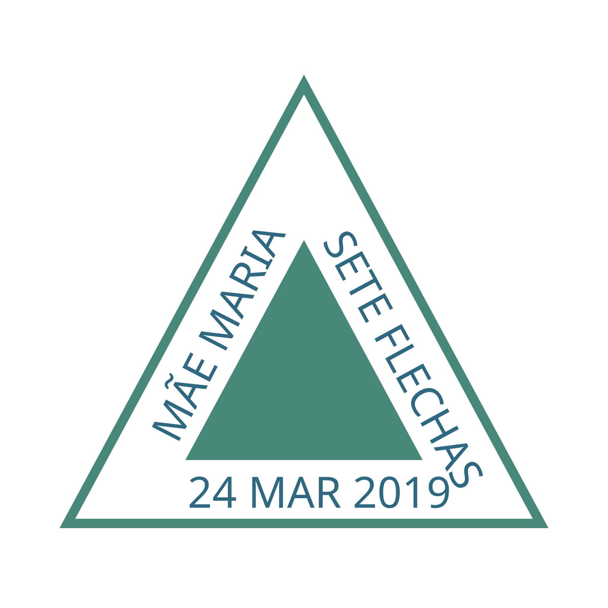

Primeira sessao na Seara Estrela de Zartu
Compartilhamos com alegria a primeira sessao de Umbanda realizada na nova seara amiga, fortalecendo nossa rede de fraternidade.
Casa de caridade espiritual fundada em 24 de marco de 2019. Praticamos a Umbanda com amor, fe e simplicidade, ancorados no Evangelho do Cristo e na tradicao do Cacique Ubirajara.

A Terreira de Mae Maria nasceu com a missao de perpetuar o trabalho de caridade espiritual praticando a Umbanda com amor, fe e simplicidade - buscando o aprimoramento moral do medium e da sociedade atraves do estudo, divulgacao e vivencia do Evangelho do Cristo.
Acervo completo de pontos de Umbanda com letras e audios.
405 pontosOracoes ao Pai, aos Orixas, do rito e devocionais.
6 coletaneasArvore raiz da Umbanda do Cacique Ubirajara Peito de Aco.
Raiz UbirajaraSessoes publicas e datas comemorativas do ano de 2026.
Calendario 2026Nossa declaracao de missao, visao e valores.
Saiba maisCasas e dirigentes irmaos da grande familia Umbandista.
Rede de feAtendimento espiritual aberto a todos. Trazemos o Evangelho do Cristo antes de cada trabalho.
Sessao publica as 9h
Linha do OrienteCasa fechada em respeito a data
Sem sessaoSessao publica as 9h
Pretos-VelhosSessao publica as 9h
Linha de CaboclosSessao publica as 9h
Pretos-VelhosPerpetuar o trabalho de caridade espiritual praticando a Umbanda com amor, fe e simplicidade - buscando com afinco o aprimoramento moral do medium e da sociedade atraves do estudo, divulgacao e vivencia do Evangelho do Cristo.- Missao da Terreira
Acompanhe os relatos, homenagens e momentos marcantes da nossa caminhada espiritual.
Compartilhamos com alegria a primeira sessao de Umbanda realizada na nova seara amiga, fortalecendo nossa rede de fraternidade.
Celebracao especial em homenagem aos 22 anos da casa irma do Terreiro de Ogum da Mata Virgem e Iansa.
Mais um ano em que abrimos as portas para honrar o santo guerreiro, que abre nossos caminhos e nos protege.
Compartilhamos com alegria o brecho beneficente da nossa seara irma, em prol do trabalho de caridade espiritual.
Celebramos com gratidao nossos sete anos de caminhada espiritual. Sete anos de portas abertas, de evangelho lido, de pontos cantados.
Reflexao sobre as datas de homenagem aos Orixas das aguas e suas particularidades dentro do nosso rito.